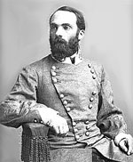

|

|

|
|
|
Joseph "Fightin' Joe" Wheeler is one of only two persons who
achieved the rank of General Officer in both the Confederate
and United States Armies. Born in Augusta, Georgia on
September 10, 1936, he grew up in Connecticut and entered
West Point in 1854. Upon graduation he served in the
Regiment of Mounted Rifles at Ft. Craig, New Mexico. In
1861 Wheeler returned to Georgia and was commissioned as a
lieutenant, and soon after became Colonel of the 19th
Alabama infantry regiment. Two years later, at the age of
twenty-six, he was promoted to major general of cavalry.
His skills as cavalry commander were most effective when
he operated close to the army; he covered every retreat of
the Army of Tennessee from Perryville, Kentucky to Atlanta,
Georgia. Instead of accompanying the army on its march
towards Nashville in 1864, Wheeler's cavalry was assigned
the difficult and mainly futile task of harassing the
Federal army of Major General William T. Sherman as it
marched through Georgia and the Carolinas. Though many in
the Army of Tennessee (as well as many historians) judged
his offensive tactics and raids to be of little importance,
General Robert E. Lee considered him one of his two best
cavalry officers.
After the end of the war, Wheeler married Daniella Jones
Sherrod and settled in Lawrence County, Alabama, as a
well-to-do lawyer, planter, and businessman. From 1884 to
1898, he served as a Democratic congressman from Alabama, in
which capacity he actively opposed the tariff and supported
free silver.
At the outbreak of the Spanish-American War in 1898,
Wheeler offered his services to President McKinley, and was
commissioned Major General of U.S. Volunteers. He
participated in the capture of Santiago, where troops under
his command, the "Rough Riders", stormed San Juan Hill. He
died on January 25, 1906 in Brooklyn, New York, and is one
of a very few Confederate generals interred in Arlington
National Cemetery.
Source: Joan Waugh, ed., Facts on File Encyclopedia of American
History: Civil War and Reconstruction, 1856 to 1869 (New York: Facts on
File, 2003), 392.
|